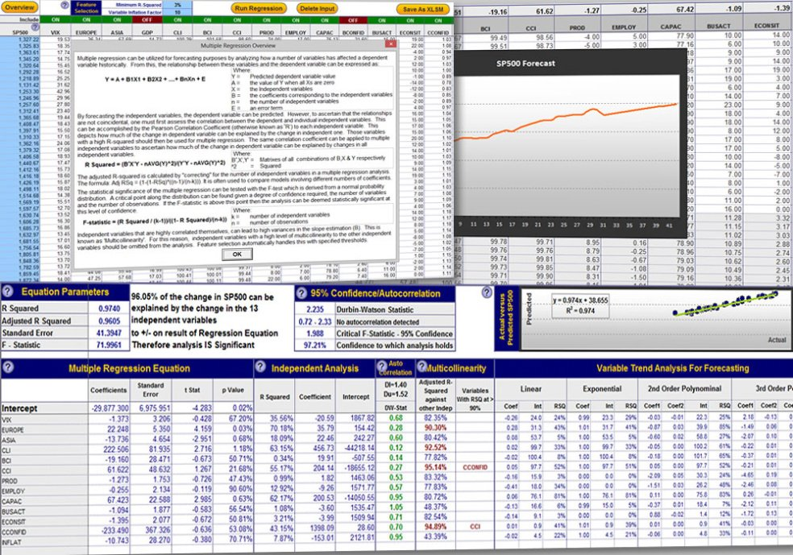
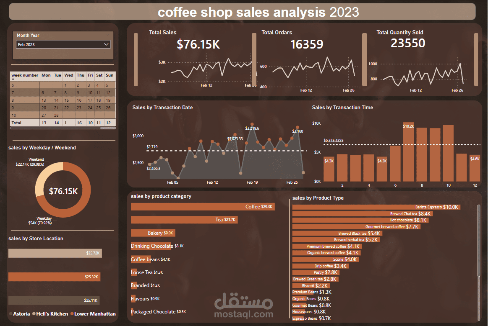
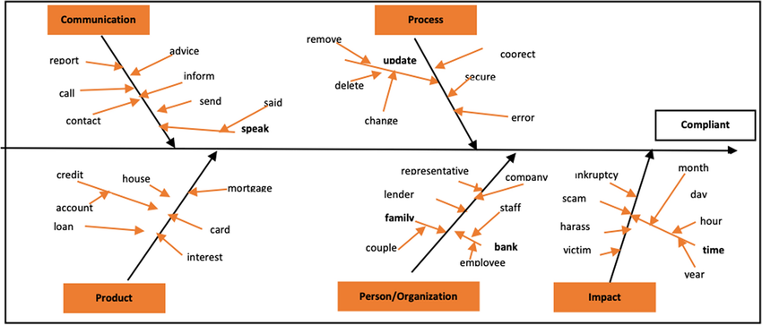
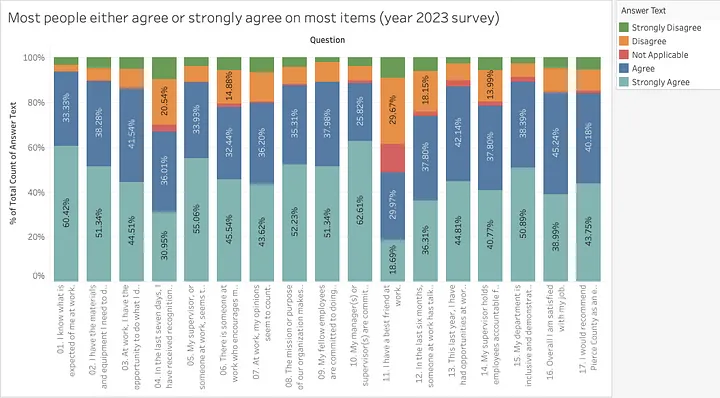
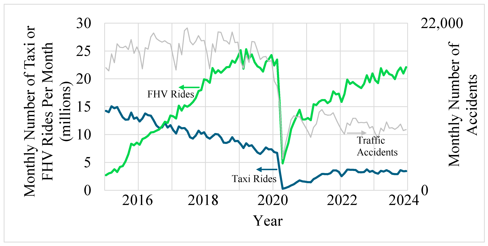

In this project, we utilise data cleaning techniques, including removing duplicates, fuzzy matching, standardising data, handling missing data, deleting unnecessary columns and rows, as well as separating and combining columns, to prepare the data for accurate analysis.

.jpg)
This project analyses total US debt from 1993 to the present, comparing each year's figures with the previous year. We visualise historical debt data through graphs to highlight trends and fluctuations over the decades. Forecasting methods are employed to project future debt levels, accompanied by a narrative interpretation of the findings. The goal is to identify patterns in debt accumulation, assess economic impacts, and provide recommendations for effective debt management strategies.
.jpg)
This project analyses transportation data from New York City, focusing on data preparation by cleaning and standardising the dataset, handling missing values, and creating new fields for date and time analysis. We then employ PivotTables to explore ridership trends by day, time, and service type. Finally, an interactive dashboard is created with visualisations and slicers for different transportation lines, allowing us to identify patterns and generate insights, including the evaluation of peak ridership times and recommendations for service improvements.

This project analyses 149,116 transactions from a fictitious coffee shop in NYC, focusing on data preparation by calculating revenue, extracting Month and Day of Week, and identifying the Hour from transaction times. We then create PivotTables to explore revenue trends and transaction patterns by Day of Week, Hour, and product categories. Finally, an interactive dashboard is developed with Pivot Charts and a slicer for store location, culminating in an analysis of transactions on Wednesdays at the Lower Manhattan location to derive insights and recommendations.

This project involves three key objectives focused on analysing consumer complaints. In Objective 1, we calculate top-level KPIs by flagging complaints as "Open" or "Closed" based on company responses and creating a PivotTable to count these statuses. We also create a "Week start" column to identify the corresponding Monday for each complaint date, and extract Year, Month, and Day from this column. In Objective 2, we visualize the weekly trend of complaints by constructing a new PivotTable and a stacked column chart that displays the counts of "Open" and "Closed" complaints by week, alongside a title and formatting enhancements. Finally, in Objective 3, we finalize the report by refining the KPIs, adjusting the chart for better readability, and connecting it to a timeline filter based on the "Week start" dates, ensuring a polished presentation of the data.

This project focuses on analysing employee survey responses from approximately 1,500 city employees in Washington state, structured around three key objectives. In Objective 1, we profile and perform quality assurance on the data by calculating basic metrics for each numerical field, removing blank and duplicate records, and standardizing inconsistent text entries. Objective 2 involves preparing the data for visualization by calculating response frequencies and proportions for each of the 10 survey questions, creating a new chart source tab, and organizing the data based on average responses. Finally, in Objective 3, we visualize the findings through stacked bar charts and Likert scales, highlighting insights and recommendations for the HR leadership team, while also enhancing chart readability and clarity. The project aims to provide meaningful insights that can inform HR decisions and strategies.

This project focuses on analysing motor vehicle collisions reported by the NYPD from January 2021 to April 2023, structured around three main objectives. In Objective 1, we identify seasonal patterns by calculating the number of collisions by month and year, visualizing this data with line charts that differentiate each year. Objective 2 involves examining weekly trends by extracting the weekday and hour from the collision data, calculating counts, and creating a heatmap to highlight collision hotspots throughout the week, employing a "white-white-red" color scale for clarity. Finally, Objective 3 analyzes contributing factors by identifying the top 10 factors associated with collisions and calculating the percentage of those resulting in injuries or fatalities, enhancing the results with data bars for better visualization. The overall goal is to derive insights that can inform traffic safety measures and policy decisions.